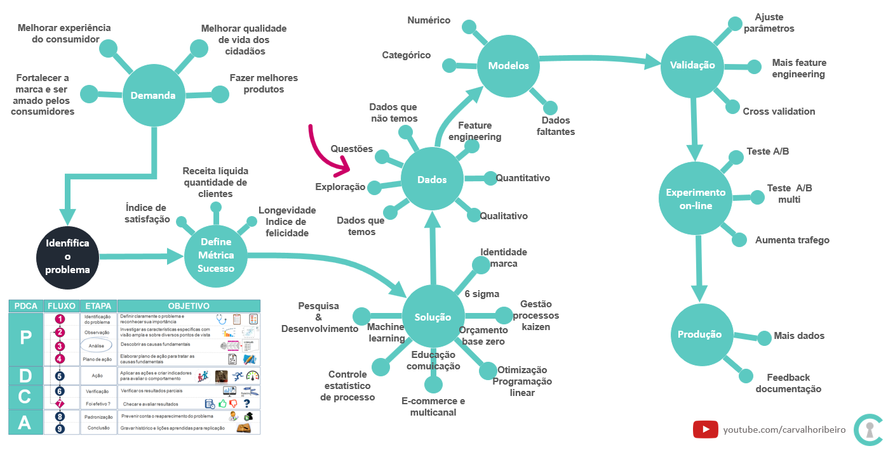
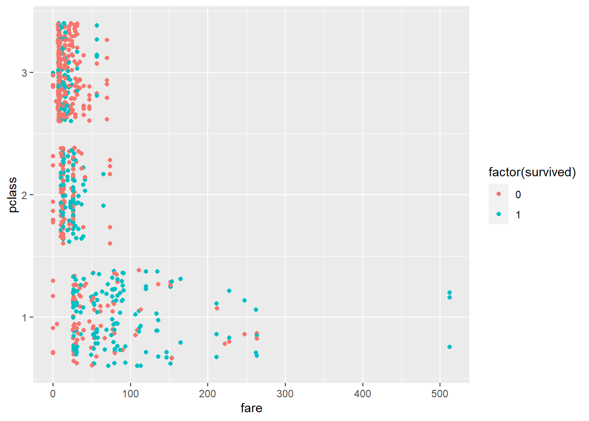

É a etapa onde é feita extração de dados e avaliação se os mesmos podem contribuir para a solução do problema a ser resolvido.
A visualização é uma forma intuitiva de traçar relações possíveis entre os dados e o desfecho permitindo a geração de questões e levantamente de hipóteses.
Geralmente estão atrelados a uma métrica de sucesso e é feito após a etapa P do PDCA , PPDAC ou outro método de análise de fenõmeno e causa raíz utilizado.

Processo de projeto kaizen
Qual o objetivo
Disponibilizar recursos revelantes para solução dos problemas
Filtrar dados relevantes dos não relevantes, entender a natureza dos dados se são realmente ruídos ou carecem de representação.
Avaliar existencia de shadow stats ou se haverá dificuldade na coleta. Por exemplo: o dado pode ser muito relevante mas difícil de ser coletado ou haver muita instabilidade e ambiguidade nos dados por exemplo usar critérios diferentes.
Gerar novas questões e hipóteses que poderão utilizar novos dados ou um resultado de interação entre os existentes.
De onde vem a demanda
A extração e visualização dos dados vem da necessidade de encontrar variáveis que expliquem o fenômeno e ajudem a prever eventos futuros.
Melhorar e estimular a geração de ideias através da interação entre os envolvidos.
# pacotes --------------------------------------------------------library(tidymodels)library(tidyverse)library(janitor)library(ggpubr)library(funModeling)library(ggalluvial)library(visdat)# dados --------------------------------------------------------#importar os dados do kaggle e salvar em diretorio padrão# importar dados e padronizar colunastrain_titanic <-read.csv("train.csv", na.strings =c(""," ")) %>%clean_names() %>%mutate(is_train =TRUE) #importar dados de testetest_titanic <-read.csv("test.csv", na.strings =c(""," ")) %>%clean_names() %>%mutate(survived =NA, is_train =FALSE) #juntar os conjuntossplit_titanic <-bind_rows(train_titanic, test_titanic)#check nas caracteristicas dos dadossplit_titanic %>% funModeling::df_status()
Como o nosso conjunto de dados é pequeno(tem poucas variáveis) é possível usar um gráfico para visualizar os tipos de dados e as características.
split_titanic %>% visdat::vis_dat()
Como faço pra visualizar dados faltantes quando o conjunto for grande ?
Sugestão É possível usar o pacote naniar com a função naniar::miss_var_summary()
Como resultado da análise podemos verificar a necessidade de algumas transformações nos dados. Anotamos tudo para alterarmos posteriormente mas seguimos com a análise exploratória por enquanto.
Alterar o tipo de variável de sex, embarked, survived, pclass = factor
Inserir dados faltantes em embarked = moda, age e fare = usando knn
Vamos fazer uma correlação para avaliar os padrões existentes. Mas note. Para fazer correlação, os dados precisam ser numéricos por isso usamos a função select_if(is.numeric) . Pelo padrão apresentado é possível verificar a existencia de dados categóricos eles geralmente ficam espaçados no gráfico e eles precisam ser transformados pra factor posteriormente e que já anotamos e comunicamos.
Será que a variável tarifa está bem representada ?
# fare - será que fare é uma variável válida ?train_titanic %>%mutate(fare = fare) %>%ggplot(aes(x=fare, y=pclass))+geom_jitter(aes(color =factor(survived)))

Sera que o tamanho da familia importa e o dado está bem representado ?
# parch sib_sp - será que o tamanho da familia importa ?train_titanic %>%mutate(family_size = parch + sib_sp +1) %>%ggboxplot(x="survived", y="family_size", fill="survived",palette ="uchicago")+stat_compare_means()
Será que existe algum padrão no nome que possa ser extraído e que ajude a explicar se impacta na sobrevivência ?
A próxima etapa é comunicar os resultados junto aos membros do projeto sobre as relações encontradas permitindo a interção e levantamento de novas necessidades ou hipóteses.
Posteriormente, vem as etapas de pré processamento, modelo, validação e submissão.
Qual o resultado
Aperfeiçoar a técnica de observação e representação de dados.
Facilitar a comunicação com os envolvidos no projeto.
Melhorar e estimular a geração de ideias através da interação entre os membros do projeto.